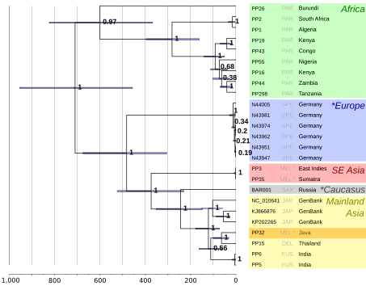
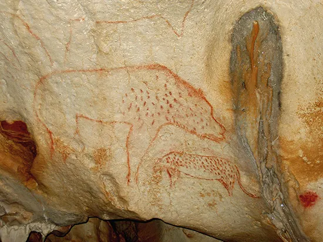
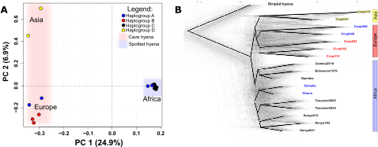
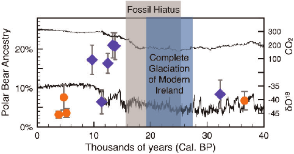
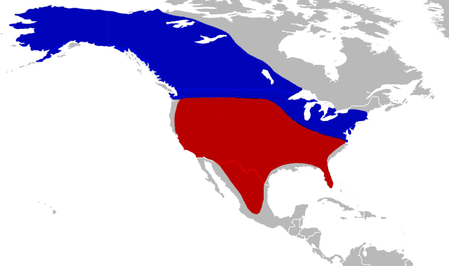
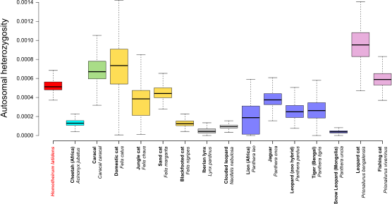
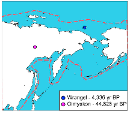
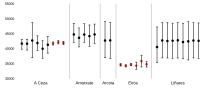
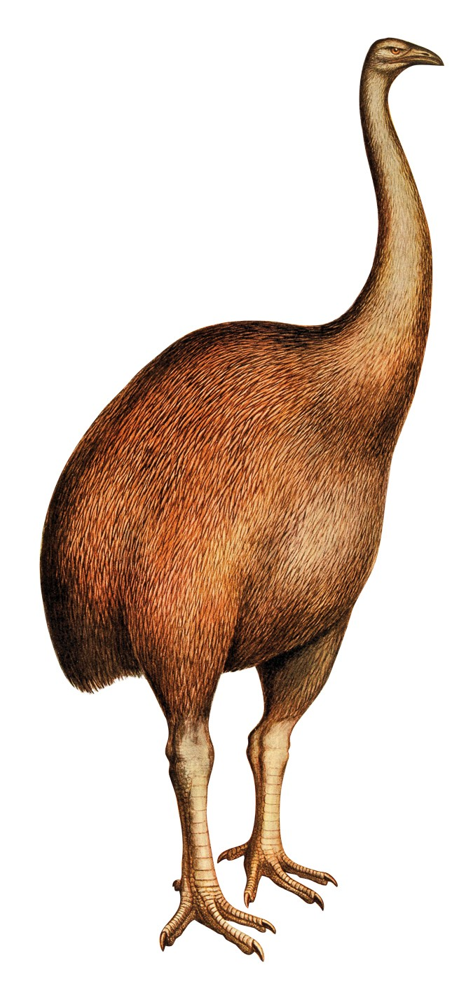
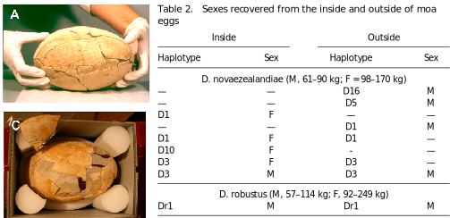

Ancient DNA: discoveries
BSX-3139 Molecular Ecology and Evolution
Dr Axel Barlow
email: a.barlow.@bangor.ac.uk
Discoveries facilitated by ancient DNA
- General challenges
- Phylogeny
- Admixture
- Genetic diversity
- Behaviour

General challenges
Few individuals
- High lab costs
- Low success rate
- Incomplete fossil record
- Genome data increases sampling of loci
- But some questions/methods still need many individuals

Low coverage and high error rates
- Cost and number of molecules limits coverage (nuclear genome typically 0-4x)
Phylogeny
Phylogeny methods
- Quite suited to few individuals
mtDNA
- Generally high coverage
- Some large mtDNA datasets (mammoths, cave bears, humans)
- Frequently used for molecular dating
Nuclear genomes
- Low coverage OK for topology
- Errors do affect branch lengths
Macrauchenia
- Endemic South American mammal
- Extinct ~10 Ka
- First collected 1834
- Charles Darwin, HMS Beagle
- Divergence time unknown
- No close reference

Macrauchenia

Macrauchenia
European leopards


European leopards

European leopards
Cave hyena
- Widespread and common across Eurasia during Pleistocene
- Morphologically distinguishable from African Crocuta
- Evolutionary/taxonomic status debated


Cave hyena

Cave hyena

Cave hyena
Admixture
Admixture methods
- Only really possible with nuclear genomes
- D statistics or tree based methods
- Works with low coverage
- Works with few individuals
- Often run in conjunction with phylogenetic analyses
Brown bears and polar bears
- Diverged ~1 Ma
- Parapatric distribution
- Ecologically differentiated
- Morphologically differentiated
- Glacial cycles shifted contact zone
- E.g. Ireland during LGM


Brown bears and polar bears

Brown bears and polar bears

Brown bears and polar bears
Cave bears and brown bears


Cave bears and brown bears


Cave bears and brown bears
Columbian mammoth
- Mammuthus columbi inhabited North America during Pleistocene
- Extinct ~12 Ka


Columbian mammoth

Columbian mammoth
Genetic diversity
Genetic diversity methods
- Some early attempts with mitochondrial DNA, not so convincing
- Much better with nuclear genomes
- Coverage is a problem
- Sophisticated analytical methods: genotype likelihoods
- Tends to use individual heterozygosity (few individuals)
- And inbreeding measures using Runs of Homozygosity (ROH)
Runs of homozygosity (ROH)
- Chromosome regions are identical by descent
- Can be calculated from pedigrees
- Genome sequencing allows identification of runs of homozygosity (ROH)

Runs of homozygosity (ROH)
- Total inbreeding = ROH content
- Recent = long ROH
- Older = short ROH

Homotherium
- Lesser known sabretooth
- Serrated canines!
- Fossil record patchy
- Rare or just poor fossil record?


Homotherium

Homotherium
White rhinos
- Two subspecies: northern and southern
- ~20,000 southern white rhinos (in 2015)
- Northern white rhino functionally extinct (2 females left in 2018)

.jpg)

White rhinos

White rhinos
Wrangel Island mammoths
- Last mammoths
- Survived until 4 Ka
- 17x coverage


Wrangel Island mammoths

Wrangel Island mammoths
Behaviour
Behaviour methods
- Very few behavioural studies (5)
- Most modern studies rely on measuring relatedness
- Hard with few individuals
- Some successes with:
- mitochondrial relationships
- genetic sexing
- relatedness (msats!)
- multidisciplinary (e.g. diet and genetics)
Cave bear homing behaviour

- 5 caves
- 4 are within a few kms
- 26 cave bear mitochondrial genomes generated using hybridisation capture
- Some have radiocarbon dates
Cave bear homing behaviour
- Caves occupied more or less simultaneously

Cave bear homing behaviour
- Each cave generally contains unique set of related haplotypes
- Bears returned to their birth cave for hibernation

Cave bear homing behaviour
Mammoth male mortality
- Male excess: caught in natural traps which favour preservation

Mammoth male mortality
Moa egg incubation

- New Zealand endemic radiation
- 6 genera
- 6m / 230 kg

Moa egg incubation

Moa egg incubation
Summary
- Revolutionary insights into extinct and extant species
- Challenge of few individuals
- Challenge of low coverage and error rates
- Difficult to plan/design experiments
Worth it!
That's all folks!